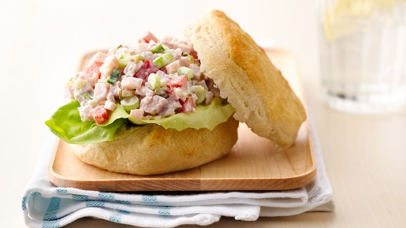

Easiest ever ham salad

What Makes a good pie?
Dill pickle relish gives a new twist to an old classic ham salad!
Ingredients
- 3 cups finely chopped fully cooked ham
- 1/4 cup sliced green onions 4(medium)
- 1/2 cup chopped dill pickles or dill pickle relish
- 1/2 cup of mayonnaise or salad dressing
- 2 teaspons dijon mustard
- lettuce leaves,if desired
Step by step
-
In large bowl, mix all ingredients except lettuce until well blended.
-
Serve on lettuce leaves. Cover and refrigerate any remaining salad.